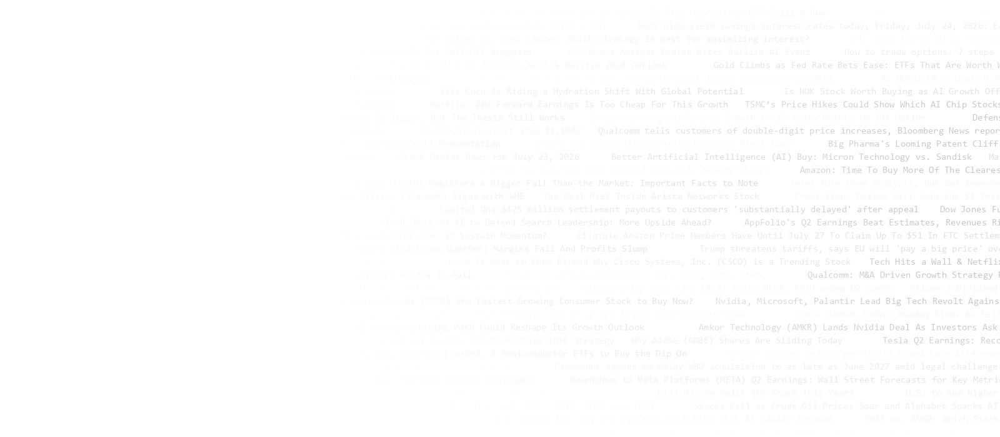

AURORA
Portfolio Intelligence CopilotFour signals, four ordered steps, one decision per holding — and a ledger that says which input caused it.

The Problem
You hold a mix of stocks. Every day you are flooded with an overwhelming amount of financial news, market data and analyst reports from many sources at once. The information is abundant — making sense of it is left entirely to you. Reconciling news, market trends and risk factors by hand makes investment decisions complex, time-consuming and inconsistent.
Our Solution
An AI-powered system that interprets diverse financial signals together, and returns a single, context-aware recommendation supported by market data, technical analysis and financial news.
Nothing is averaged
Four inputs, four ordered steps. Each one touches exactly one output dimension — direction, confidence, or size.
A ledger, not a black box
Every step logs what it saw and what it moved. The deltas sum exactly to the confidence that ships with the answer.
The rules are enforced, not documented
5 invariants over 8,064 generated cases. The build fails if the engine stops obeying itself.
System Architecture
The trend read on this specific holding — EMA confluence, MACD crossovers and RSI extremes, scored against the current market regime.
plus a signed −3.5 … +3.5 score
Today's headline tone on this holding, scored by FinBERT and screened for genuinely urgent events — the ones that earn an override.
+ critical-event flag
Is the whole book in good shape right now — concentration, correlation, drawdown and diversification, rolled into one standing score.
(unknown is recorded, not guessed)
How dangerous this holding is right now: a HAR-X + News volatility forecast, placed against the symbol's own history.
+ VaR / ES by simulation
Sets the initial direction — Buy, Add, Trim, Sell or Hold — and a starting confidence scaled by how strong the signal actually was.
Moves confidence only. It can flip direction through one rare, triple-gated critical-event override: loud enough, relevant enough, and important enough.
Nudges confidence only. A fragile book makes every buy less convincing and every exit more so — but it never gets a vote on which way to go.
Scales position size only. High volatility buys a smaller position, never a different opinion — and a size below the executable minimum becomes no trade at all.
Technology Stack
One half of this stack is fitted to data. The other half is closed form. Keeping the boundary visible is the point.
Serving Python · FastAPI · Uvicorn · Streamlit · Next.js 16 / React 19 / TypeScript Data pandas · NumPy · Parquet · Yahoo Finance · RSS feeds · FNSPID corpus · NASDAQ Trader directory Dev pytest (48 tests) · Jupyter · VS Code · Git & GitHub
Outcomes
Causal backtest, 21 symbols, 25 bps costs, rebalanced every five sessions. Bars are Sharpe on the locked 2021–2023 test window; each ablation removes exactly one step.
Accuracy
The one fitted model in the stack, benchmarked on future 5-session realised volatility — expanding annual walk-forward, 5-session embargo, 27,027 forecasts. Lower QLIKE is better.
Six engines, two frontends, one decision.
FastAPI backend · Streamlit and Next.js clients · ~40 offline
research scripts behind a promotion gate, so a trained artifact
only goes live once its own metadata says it may.
Repo github.com/lmh202/finance_prj
Data Yahoo Finance (prices) · public RSS financial feeds ·
FNSPID news corpus 2013–2023 · NASDAQ Trader symbol directory.
Scope Decision support and coursework research. Not
investment advice, and not a licensed advisory product.
Reproduce pytest tests/ ·
python scripts/fusion_selfcheck.py ·
python scripts/backtest_ledger_fusion.py
- Corsi (2009). HAR model of realized volatility. J. Fin. Econometrics 7(2).
- Barndorff-Nielsen & Shephard (2002). Realised volatility. JRSS-B 64(2).
- Barone-Adesi et al. (1999). Filtered historical simulation VaR. J. Futures Markets.
- Diebold & Mariano (1995). Comparing predictive accuracy. JBES 13(3).
- Araci (2019). FinBERT: financial sentiment with pre-trained language models.
- Dong et al. (2024). FNSPID: a large-scale financial news–price dataset.
- A selection; the full list ships with the repo.